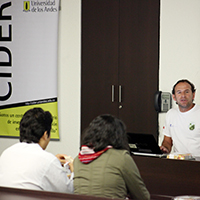
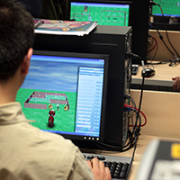
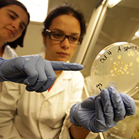
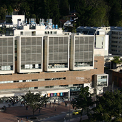
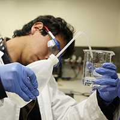

Secretaría General
Recopilación de las principales decisiones y temas tratados por el Comité Directivo y el Consejo Académico, entre el 22 de agosto de 2013 y el 20 de noviembre de 2013. Así mismo, se incluyen algunos hechos de interés.
|
| Boletín electrónico de la Universidad de los Andes - No. 35 - Diciembre de 2013 Secretaría General |
| Carta del Rector al Consejo Superior No. 67-13 Recopilación de las principales decisiones y temas tratados por el Comité Directivo y el Consejo Académico, entre el 22 de agosto de 2013 y el 20 de noviembre de 2013. Así mismo, se incluyen algunos hechos de interés. |
| ASUNTOS ACADÉMICOS | |||||
|  | Reforma curricular de los programas de posgrado del CIDEREl Comité Directivo aprobó una reforma curricular de los programas académicos del Cider relacionados con: la homologación de créditos entre los programas, la reducción de oferta de cursos, la posibilidad de cursar electivas en otras unidades académicas y la suspensión del programa de especialización en Desarrollo Local. |
||||
|  | Aprobación de la Especialización en Desarrollo de VideojuegosEl Comité Directivo aprobó la creación del programa de Especialización en Desarrollo de Videojuegos de la Facultad de Ingeniería. Este programa busca ser un apoyo efectivo y dinamizador al naciente sector del desarrollo de videojuegos en Colombia y se diseñó bajo un componente de formación integral, trabajo interdisciplinario y esquema de enseñanza blended (semipresencial). |
||||
|  | Reglamentos de doctorado de la Facultad de CienciasEl Comité Directivo aprobó los reglamentos de los programas de doctorado en Física, Química, Biología y Matemáticas de la Facultad de Ciencias, los cuales se ajustan a las disposiciones del Reglamento General de Estudiantes de Doctorado (RGED). |
||||
|  | Reforma curricular del programa de GeocienciasEl Comité Directivo aprobó una reforma curricular al programa de pregrado de Geociencias teniendo en cuenta que algunos de sus cursos aún eran dictados por el Departamento de Física. Ahora los ofrecerá directamente el Departamento de Geociencias. |
||||
|  | Aprobación de la Maestría en Diseño de Procesos y ProductosEl Comité Directivo aprobó la creación de la Maestría en Diseño de Procesos y Productos, ofrecida por el Departamento de Ingeniería Química. El propósito de este programa es formar profesionales con capacidad de plantear, diseñar e implementar estrategias para el diseño integrado de procesos y productos químicos, que les permitan a las empresas de estos sectores aumentar su competitividad, optimizar el uso de recursos e implementar estrategias innovadoras. |
||||
|
|||||